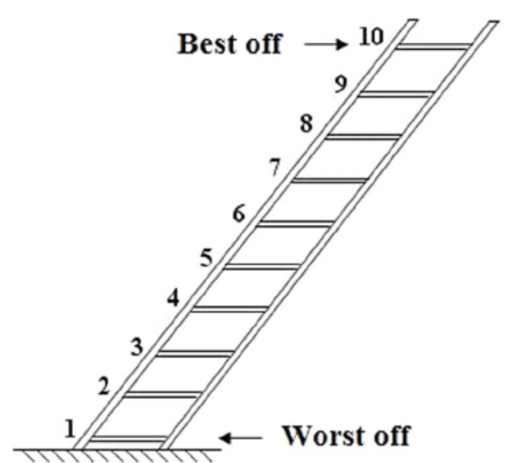

<!DOCTYPE html>
<html>
<head>
  <meta charset="utf-8" />
  <title>Personality Judgment Task</title>
  <link href="https://cdn.jsdelivr.net/npm/jspsych@8.2.3/css/jspsych.css" rel="stylesheet" type="text/css" />
  <script src="https://cdn.jsdelivr.net/npm/jspsych@8.2.3/dist/index.browser.min.js"></script>
  <script src="https://cdn.jsdelivr.net/npm/@jspsych/plugin-html-keyboard-response@2.1.0/dist/index.browser.min.js"></script>
  <script src="https://cdn.jsdelivr.net/npm/@jspsych/plugin-survey-likert@2.1.0/dist/index.browser.min.js"></script>
  <script src="https://cdn.jsdelivr.net/npm/@jspsych/plugin-survey-text@2.1.0/dist/index.browser.min.js"></script>
  <script src="https://cdn.jsdelivr.net/npm/@jspsych/plugin-survey-multi-choice@2.1.0/dist/index.browser.min.js"></script>
  <script src="https://cdn.jsdelivr.net/npm/@jspsych/plugin-call-function@2.1.0/dist/index.browser.min.js"></script>
  <script src="https://cdn.jsdelivr.net/npm/@jspsych-contrib/plugin-pipe@0.6.0/dist/index.browser.min.js"></script>
  <style>
    .jspsych-content-wrapper {
      max-width: 900px;
      margin: auto;
      font-size: 1.05rem;
      line-height: 1.6;
    }

    .neutral-range {
      accent-color: #6c757d;
      background: transparent;
    }

    .neutral-range::-webkit-slider-runnable-track {
      height: 6px;
      border-radius: 999px;
      background: #d8d8d8;
    }

    .neutral-range::-webkit-slider-thumb {
      -webkit-appearance: none;
      appearance: none;
      width: 16px;
      height: 16px;
      border-radius: 50%;
      background: #6c757d;
      border: none;
      margin-top: -5px;
      box-shadow: none;
    }

    .neutral-range::-moz-range-track {
      height: 6px;
      border-radius: 999px;
      background: #d8d8d8;
    }

    .neutral-range::-moz-range-thumb {
      width: 16px;
      height: 16px;
      border-radius: 50%;
      background: #6c757d;
      border: none;
      box-shadow: none;
    }
  </style>
</head>
<body></body>
<script>
  const jsPsych = initJsPsych();

  // Replace with your DataPipe experiment ID before deploying.
  const pipe_id = "JX4hJtjy26fD";
  const participantID = jsPsych.randomization.randomID(8);
  const filename = `study_${participantID}.csv`;

  const condition = jsPsych.randomization.sampleWithoutReplacement([0, 1], 1)[0];

  function shuffleArray(array) {
    for (let i = array.length - 1; i > 0; i--) {
      const j = Math.floor(Math.random() * (i + 1));
      [array[i], array[j]] = [array[j], array[i]];
    }
  }

  const conditionInstructions = [
    {
      intro1: `<h2>Welcome!</h2>
        <p>Today, we are interested in how people understand others, especially during times of focused observation. We will ask you to read something written by another person, and then we will ask you some questions about the person who wrote it. Finally, we will ask you some questions about yourself.</p>
        <p>Press the spacebar to continue.</p>`,
      intro2: `<p>To begin, we ask that you give this task your undivided attention.</p>
        <p><strong>Please close all your tabs, and do not scroll on your phone. We know it can be difficult, but we especially ask that you do not check the news, social media, or however you keep track of current events.</strong></p>
        <p>Press the space bar to continue.</p>`,
      intro3: `<p>Before you read the passage by the previous participant, we ask that you please give your full attention. We know it might be tough, especially given the state of the world these days. We know how hard it is not to think about politics and the news.</p>
        <p>You might think about these things many times as you read, or you might not at all. Having your mind wander is a common and natural response, and you will not be evaluated or penalized based on how often you press the space bar. <strong>However, this information is important for our study. Every time your mind wanders to politics or the state of the world, please press the spacebar.</strong></p>
        <p>Please have your hand on the space bar as you read. This ensures you press the space bar each time you think about politics.</p>`,
      passage: `
        <p>We asked a participant in an earlier study to answer this question:</p>
        <p><em style="color: navy;">"What are your plans for the next few months? Please tell us what you have coming up in as much detail as you can. We want you to just give us your unfiltered thoughts so feel free to type as you think. Don't worry about spelling or grammar, or about writing a "polished" response—just write whatever pops into your head."</em></p>
        <p>You are about to read a prior response that has been randomly selected by the computer. We did not edit it, so please excuse any poor grammar or bad language.</p>
        <p><strong>Remember! Keep your hand on the spacebar. Please press it every time your mind wanders to politics or the state of the world.</strong></p>
        <hr style="border: 1px solid black; margin: 1rem 0;">
        <div style="text-align: left;">
        <p>Well, over the next few months, we’re all really just doing the same old. My husband and I are going to work, the kids are going to school. And soccer practice. And sleepovers. And figuring out what the kids will do all summer. But at least I finally finished planning out our family road trip. It was sooooo much work, but the vacation will be a lot of fun. The kids will love it.</p>
        <p>We’re planning a road trip from our house in Minneapolis to the Grand Canyon. It’ll be a much needed chance to rest and recharge, especially after the winter we had. So stressful!!! Plus, it's always such a relief when spring comes around. The ice is finally melting off of my roof!</p>
        <p>Our trip is going to last a week. My daughter loves learning about ecosystems, so is bursting with excitement about seeing the desert for the first time. She won’t stop talking about the cacti and the scorpions and she goes on until she’s blue in the face about all the plants and animals. For example, she really wants to see this bird when we’re there, a condor I think. But she’s worried that there won’t be any condors there, or whatever theyre called, because they’ve prematurely migrated north to escape the unusually hot weather for this time of year. This reminds me… when she was in third grade, she was obsessed with ladybugs. One time she ruined her freshly painted bedroom wall by drawing out the ladybug’s evolutionary tree diagram—she had some other fancy name for it that she looked up in a book, which of course I forget. We were super mad at her in the moment, but we eventually realized that we should encourage her passion. It seems like every week at the dinner table, she tells us about another animal that has been placed on the endangered species list, and it honestly exasperates her that no one seems to care about the planet. This year in school she learned about the water cycle, and about droughts. My daughter put a little bucket in the backyard, with a measuring stick, to document the lack of rainfall this year… she’s really into it, but I admit it makes me feel a little sad sometimes. Regardless, we’re thankful that she takes interest in anything besides her iPad. She’s only twelve years old, and she’s been complaining for years that she doesn't have a phone yet. Ridiculous! I’m glad I listened to my own parents’ warnings about the dangers of too much screen time, but honestly I feel that there’s not that much we can do. If they don’t have access to something scary, their little friends at school do.</p>
        <p>My son, on the other hand, loves to paint, and he is bringing all his artist’s materials with him so he can draw inspiration from all the natural landscapes. For years we’ve taken what feels like weekly trips to the art supply store to get him watercolors, paintbrushes, refills, special paper, pastels, origami paper and a bunch of other stuff that we need a whole nother house for! If he isn't locked in his room painting or building then he is asking me a million questions about colors and buildings and shapes. He used to let us see his work all the time—he was proud—but then one kid in his class said his dad told him art was for girls so now he never lets us see what he is working on. Incidents like this seem to be happening more and more as he gets older. All his friends watch these videos on their phones constantly of these guys who tell them all kinds of freaky stuff about women and girls, and they seem to regard them as the enemy. Good luck with that, I say. He seems to shake it off for the most part, but I can tell that it really gets to him, and makes him feel weird about who he is and who he wants to be—breaks my heart as a mom. Anyway, ahead of our trip, he’s been somewhat sheepishly showing us so many photographs and paintings of the Grand Canyon at different times of day and in different light. I hope this trip restores some of his joy and enthusiasm for painting.</p>
        <p>My husband who is originally from Tulsa loves maps, and is obsessed with planning out every detail of our voyage. He tells me that our trip will take 23 hours. That means we will have to find a place to sleep for two nights along our route. I never seem to sleep very well in hotels, and neither does he. We plan to head from Minneapolis down I-35 to Iowa, take I-80 through Nebraska, then get on I-76 and 70 from Colorado to Utah, and finally, take some smaller roads down to Arizona. I always offer to drive, but he prefers it; he teases me that I am too “Minnesota nice.” He won’t relent until he’s nearly falling asleep at the wheel—if not for the kids presence, he’d probably insist even then.</p>
        <p>It makes sense for us to stop in Omaha and Denver, but neither of those cities seem like they offer much to do. Another thing that annoys me about driving through these rural areas are the gigantic political billboards. They’re so depressing. Can they give it a rest for one minute? We already have to see their ads on TV and on our phones. I just want a break. My husband originally wanted to take a more scenic route through North and South Dakota, but he changed his mind after his friend sent him a video of a large new AI data center in rural North Dakota. It emits this terribly strong light and a grating sound. He has no interest in driving past it, nor does he want to explain to the kids why it’s there. Plus, that extra drive time would open the door for even more appeals from the kids for screen time. As it is, we are much more lax about it on road trips (reluctantly, of course).</p>
        <p>I’m the family’s main budget-maker, so I have been really stressed about the finances of it all. I have a meticulous excel spreadsheet going, with every expense accounted for. I have made sure to budget enough funds for souvenirs. On our last trip, our kids wanted something from every single stop! Safe to say I cannot afford to make that mistake again. Speaking of things I can't afford, I am really worried about how much gas is going to cost on our journey. It seems like every time I drive past our local gas station, the price has jumped up even higher. Gas is more expensive, groceries are too, and of course my spouse and I haven't gotten a raise in years. More and more of our friends have gotten laid off, and we are so lucky to both have jobs still. I think I made and remade our budget spreadsheet a billion times!</p>
        <p>Funny enough, our original plan was to go to Amsterdam. Amsterdam had something for all of us: my son’s love of painting, my husband’s interest in geography and city planning, for my daughter all those famous tulips that everyone talks about. But thank goodness we didn't end up booking that trip. That budgeting spreadsheet would have been a complete nightmare. I mean have you seen flight prices lately? Not gonna work for us. The kids’ mild disappointment was gone when we told them we would be going to the Grand Canyon instead.</p>
        <p>Anyway, this worked out great because none of us have ever been to the Grand Canyon or any other national park before. As I said, our trip will last a week. Then, when we finally get home after the long drive back, we only have one night before it all starts again: the kids go back to school, we go back to work. Back to making breakfast and making sure chores are done, all while trying not to spend too much time scrolling my news feed. All in all, however, I really think that this family vacation will trump all our previous trips!</p>
        </div>`,
    },
    {
      intro1: `<h2>Welcome!</h2>
        <p>Today, we are interested in how people understand others, especially during times of focused observation. We will ask you to read something written by another person, and then we will ask you some questions about the person who wrote it. Finally, we will ask you some questions about yourself.</p>

        <p>Press the spacebar to continue.</p>`,
      intro2: `<p>To begin, we ask that you give this task your undivided attention.</p>
        <p><strong>Please close all your tabs, and do not scroll on your phone. We know it can be difficult, but we especially ask that you do not check your calendar, your planner, or anything you use to keep track of the things you have to do throughout your day.</strong></p>
        <p>Press the space bar to continue.</p>`,
      intro3: `<p>Before you read the passage by the previous participant, we ask that you please give your full attention. We know it might be tough, especially given how busy everyone is. We know how hard it is not to think about other things you might need to be doing right now, like other tasks or chores.</p>
        <p>You might think about these things many times as you read, or you might not at all. Having your mind wander is a common and natural response, and you will not be evaluated or penalized based on how often you press the space bar. <strong>However, this information is important for our study. Every time your mind wanders to something else you could or should be doing, please press the spacebar.</strong></p>
        <p>Please have your hand on the space bar as you read. This ensures you press the space bar each time you think about the tasks on your calendar.</p>`,
      passage: `
        <p>We asked a participant in an earlier study to answer this question:</p>
        <p><em style="color: navy;">"What are your plans for the next few months? Please tell us what you have coming up in as much detail as you can. We want you to just give us your unfiltered thoughts so feel free to type as you think. Don't worry about spelling or grammar, or about writing a "polished" response—just write whatever pops into your head."</em></p>
        <p>You are about to read a prior response that has been randomly selected by the computer. We did not edit it, so please excuse any poor grammar or bad language.</p>
        <p><strong>Remember! Keep your hand on the spacebar. Please press it every time your mind wanders to other things you could or should be doing.</strong></p>
        <hr style="border: 1px solid black; margin: 1rem 0;">
        <div style="text-align: left;">
        <p>Well, over the next few months, we're all really just doing the same old. My husband and I are going to work, the kids are going to school. And soccer practice. And sleepovers. And figuring out what the kids will do all summer. But at least I finally finished planning out our family road trip. It was sooooo much work, but the vacation will be a lot of fun. The kids will love it.</p>
        <p>We’re planning a road trip from our house in Duluth to the Grand Canyon. It’ll be a much needed chance to rest and recharge, especially after the winter we had. So stressful!!! There’s so much to do. Plus, it's always such a relief when spring comes around. Looking forward to spending more time outside, whenever we can squeeze it in…</p>
        <p>Our trip is going to last a week. My daughter loves learning about ecosystems, so is bursting with excitement about seeing the desert for the first time. She won’t stop talking about the cacti and the scorpions, and she goes on until she’s blue in the face about all the plants and animals. For example, she really wants to see this bird when we’re there, a condor I think. But she’s worried that she won’t see any condors, or whatever they’re called, because no one else in the family will have the patience to sit and watch for them. She thinks, for instance, that I’ll be distracted on my phone. This reminds me… when she was in third grade, she was obsessed with ladybugs. One time she ruined her freshly painted bedroom wall by drawing out the ladybug’s evolutionary tree diagram—she had some other fancy name for it that she looked up in a book, which of course I forget. We were super mad at her in the moment, but we eventually realized that we should encourage her passion. This year in school she learned about the water cycle. My daughter put a little bucket in the backyard with a measuring stick to document the rainfall this year. She’s really into it, but she was a little upset when I told her I didn't have much time to help her collect her measurements… dinner needed to be made! I feel like she doesn't appreciate how much we have to do for them every day. But I guess I didn't either when I was a kid myself. There is just so much to get done and the tasks always multiply! Regardless, were thankful that she takes interest in anything besides her iPad. She’s only twelve years old, and she’s been complaining for years that she doesn't have a phone yet. Ridiculous! I’m glad I listened to my own parents warnings about the dangers of too much screen time, but honestly I feel that there’s not that much we can do. If they don’t have access to something scary, their little friends at school do.</p>
        <p>My son, on the other hand, loves to paint, and he is bringing all his artist’s materials with him so he can draw inspiration from the natural landscape. For years, we’ve taken what feels like weekly trips to the art supply store to get him watercolors, paintbrushes, refills, special paper, pastels, origami paper and a bunch of other stuff that we need a whole nother house for! Throughout his childhood, If he wasn’t locked in his room painting or building then he would be asking me a million questions about colors and buildings and shapes. Lately though, he seems to enjoy painting less and less. Well, he still likes it, but he seems to just have fewer hours in the day where he has the free time to create things. I guess he’s just gotten so busy. Homework and after school activities are all adding up. He is starting to think about college, and it seems like as he focuses on class and his applications, his love for art is fading to the background—breaks my heart as a mom. Anyway, ahead of our trip, he’s been somewhat sheepishly showing us so many photographs and paintings of the Grand Canyon’s majestic stature, and insists that even these thoughtful compositions pale in comparison to seeing it in person. I hope this trip helps him express himself more authentically.</p>
        <p>My husband who is originally from Tulsa, loves maps, and is obsessed with planning out every detail of our voyage. He tells me that our trip will take 23 hours. That means we will have to find a place to sleep for two nights along our route. I never seem to sleep very well in hotels, and neither does he. We plan to head from Duluth down I-35 to Iowa, take I-80 through Nebraska, then get on I-76 and 70 from Colorado to Utah, and finally, take some smaller roads down to Arizona. I always offer to drive, but he prefers it; he also knows I’m just offering to be nice. He won’t relent until he’s nearly falling asleep at the wheel—if not for the kids’ presence, he’d probably insist even then. Plus, his driving allows me to answer some emails on the road.</p>
        <p>It makes sense for us to stop in Omaha and Denver, but neither of those cities seem like they offer much to do. My husband originally wanted to take a more scenic route through North and South Dakota, but he changed his mind after he realized that the hotels out there would not have reliable wifi. He only got approval to take this vacation time on the condition that he work remotely for some of the days. He plans to do this work after the kids are asleep, but I think he’s going to be tired from all the driving. He’ll have to make it work. We can't afford for him to lose his job. Regardless, that extra drive time would open the door for even more appeals from the kids for screen time. As it is, we are much more lax about it on road trips (reluctantly, of course).</p>
        <p>I’m the family’s main budget-maker, so I have been really stressed about planning for that. I have a meticulous excel spreadsheet going, with every expense accounted for. I have made sure to budget enough funds for souvenirs. On our last trip, our kids wanted something from every single stop! Safe to say I cannot afford to make that mistake again. Another thing to worry about is the food situation. My kids are both super picky eaters (despite our best efforts), and its a constant battle in our house, and of course it falls to me to deal with. Making one meal that everyone will eat is basically impossible, so at least I won’t have to worry about grocery shopping or cooking for a week. When we eat out though, I get so embarrassed when we go to a restaurant and tell the waiter AGAIN “chicken tenders and french fries for them, please”. My friend told me about some book that is supposed to help with this, but I don’t know when I’m going to have the time to read it.</p>
        <p>Funny enough, our original plan was to go to Amsterdam. Amsterdam had something for all of us: my son’s love of painting, my husband’s interest in geography and city planning, and for my daughter all those famous tulips that everyone talks about. But thank goodness we didn't end up booking that trip. Planning that would have been a complete nightmare. Their cafes don’t even allow laptops! Not gonna work for us. The kids’ mild disappointment was gone when we told them we would be going to the Grand Canyon instead.</p>
        <p>Anyway, this worked out great because none of us have ever been to the Grand Canyon or any other national park before. As I said, our trip will last a week. Then, when we finally get home after the long drive back, we only have one night before it all starts again: the kids go back to school, we go back to work. Back to making breakfast and making sure chores are done, all while trying not to spend too much time scrolling my news feed. I'm already worried about all the work I'll have to do when we get back. All in all, however, I think that this family vacation will be our best one yet.</p>
        </div>`
    }
  ];

  const allQuestions = [
    {
      type: jsPsychHtmlKeyboardResponse,
      stimulus: conditionInstructions[condition].intro1,
      choices: [' '],
      data: { participant_id: participantID, event: 'condition_intro1', condition: condition + 1 }
    },
    {
      type: jsPsychHtmlKeyboardResponse,
      stimulus: conditionInstructions[condition].intro2,
      choices: [' '],
      data: { participant_id: participantID, event: 'condition_intro2', condition: condition + 1 }
    },
    {
      type: jsPsychHtmlKeyboardResponse,
      stimulus: conditionInstructions[condition].intro3,
      choices: [' '],
      data: { participant_id: participantID, event: 'condition_intro3', condition: condition + 1 }
    },
    {
      type: jsPsychHtmlKeyboardResponse,
      stimulus: `<h2>Ready?</h2><p>Press the <strong>spacebar</strong> once now.</p>`,
      choices: [' '],
      data: { participant_id: participantID, event: 'initial_press', condition: condition + 1 }
    }
  ];

  let pressCount = 0;
  let savedScrollY = 0;
  let advanceReading = false;
  let surveyConfirmBypass = false;

  function surveyHasUnanswered() {
    const display = jsPsych.getDisplayElement();
    const form = display.querySelector('form');
    if (!form) {
      return false;
    }

    const radioGroups = {};
    Array.from(form.querySelectorAll('input[type="radio"]')).forEach(input => {
      if (input.name) {
        radioGroups[input.name] = radioGroups[input.name] || false;
        if (input.checked) {
          radioGroups[input.name] = true;
        }
      }
    });
    if (Object.keys(radioGroups).length > 0 && Object.values(radioGroups).some(checked => !checked)) {
      return true;
    }

    const checkboxGroups = {};
    Array.from(form.querySelectorAll('input[type="checkbox"]')).forEach(input => {
      const key = input.name || input.id || 'checkbox';
      checkboxGroups[key] = checkboxGroups[key] || false;
      if (input.checked) {
        checkboxGroups[key] = true;
      }
    });
    if (Object.keys(checkboxGroups).length > 0 && Object.values(checkboxGroups).some(checked => !checked)) {
      return true;
    }

    const textControls = Array.from(form.querySelectorAll('input[type="text"], input[type="email"], input[type="number"], input[type="tel"], input[type="url"], textarea'));
    if (textControls.length > 0 && textControls.some(control => control.value.trim() === '')) {
      return true;
    }

    const selects = Array.from(form.querySelectorAll('select'));
    if (selects.length > 0 && selects.some(select => !select.value || select.value === '')) {
      return true;
    }

    return false;
  }

  function showYesNoConfirm(message) {
    return new Promise(resolve => {
      const overlay = document.createElement('div');
      overlay.style.position = 'fixed';
      overlay.style.top = 0;
      overlay.style.left = 0;
      overlay.style.width = '100%';
      overlay.style.height = '100%';
      overlay.style.backgroundColor = 'rgba(0, 0, 0, 0.4)';
      overlay.style.zIndex = 9999;
      overlay.style.display = 'flex';
      overlay.style.alignItems = 'center';
      overlay.style.justifyContent = 'center';

      const dialog = document.createElement('div');
      dialog.style.background = 'white';
      dialog.style.padding = '1.5rem';
      dialog.style.borderRadius = '8px';
      dialog.style.boxShadow = '0 4px 16px rgba(0,0,0,0.2)';
      dialog.style.maxWidth = '440px';
      dialog.style.width = '90%';
      dialog.style.textAlign = 'center';

      const text = document.createElement('p');
      text.textContent = message;
      text.style.marginBottom = '1rem';
      dialog.appendChild(text);

      const buttons = document.createElement('div');
      buttons.style.display = 'flex';
      buttons.style.justifyContent = 'center';
      buttons.style.gap = '0.75rem';

      const yesButton = document.createElement('button');
      yesButton.type = 'button';
      yesButton.textContent = 'Yes';
      yesButton.style.padding = '0.75rem 1.25rem';
      yesButton.style.cursor = 'pointer';

      const noButton = document.createElement('button');
      noButton.type = 'button';
      noButton.textContent = 'No';
      noButton.style.padding = '0.75rem 1.25rem';
      noButton.style.cursor = 'pointer';

      buttons.appendChild(noButton);
      buttons.appendChild(yesButton);
      dialog.appendChild(buttons);
      overlay.appendChild(dialog);
      document.body.appendChild(overlay);

      function cleanup() {
        yesButton.removeEventListener('click', onYes);
        noButton.removeEventListener('click', onNo);
        document.body.removeChild(overlay);
      }

      function onYes() {
        cleanup();
        resolve(true);
      }

      function onNo() {
        cleanup();
        resolve(false);
      }

      yesButton.addEventListener('click', onYes);
      noButton.addEventListener('click', onNo);
    });
  }

  function attemptSurveySubmit(eventTarget, event) {
    const form = eventTarget.closest('form');
    if (!form || !form.closest('.jspsych-display-element')) {
      return true;
    }
    if (surveyConfirmBypass) {
      surveyConfirmBypass = false;
      return true;
    }
    if (!surveyHasUnanswered()) {
      return true;
    }
    if (event) {
      event.preventDefault();
      event.stopImmediatePropagation();
    }
    showYesNoConfirm('You have not answered every response on this page. Do you wish to proceed?').then(proceed => {
      if (proceed) {
        surveyConfirmBypass = true;
        if (typeof form.requestSubmit === 'function') {
          form.requestSubmit();
        } else {
          form.submit();
        }
      }
    });
    return false;
  }

  document.addEventListener('click', function(event) {
    const button = event.target.closest('input[type="submit"], button[type="submit"]');
    if (!button) {
      return;
    }
    attemptSurveySubmit(button, event);
  }, true);

  document.addEventListener('submit', function(event) {
    const form = event.target;
    if (!(form instanceof HTMLFormElement)) {
      return;
    }
    attemptSurveySubmit(form, event);
  }, true);

  const readingTrial = {
    type: jsPsychHtmlKeyboardResponse,
    stimulus: `<div id="reading-trial-container" style="position:relative;display:flex;flex-direction:column;gap:1rem;padding:1rem;min-height:100vh;">
      <div id="passage-scroll-container" style="flex:1 1 auto;max-height:calc(100vh - 140px);overflow-y:auto;padding-right:1rem;">
        ${conditionInstructions[condition].passage}
      </div>
      <div style="flex:0 0 auto;">
        <button id="continue-button" type="button" style="margin-top:0.5rem;padding:0.75rem 1.25rem;font-size:1rem;cursor:pointer;">Continue</button>
      </div>
    </div>`,
    choices: [],
    response_ends_trial: false,
    on_load: function() {
      const passageContainer = document.getElementById('passage-scroll-container');
      const continueButton = document.getElementById('continue-button');
      let savedScrollTop = 0;
      let overlayElement = null;
      let feelingTextarea = null;

      const saveScrollPosition = () => {
        if (passageContainer) {
          savedScrollTop = passageContainer.scrollTop;
        }
      };

      const restoreScrollPosition = () => {
        if (!passageContainer) return;
        const applyScroll = () => {
          passageContainer.scrollTop = savedScrollTop;
          if (Math.abs(passageContainer.scrollTop - savedScrollTop) > 1) {
            requestAnimationFrame(applyScroll);
          }
        };
        requestAnimationFrame(() => requestAnimationFrame(applyScroll));
      };

      const hideOverlay = () => {
        if (!overlayElement) return;
        if (overlayElement.parentElement) {
          overlayElement.parentElement.removeChild(overlayElement);
        }
        overlayElement = null;
        feelingTextarea = null;
        restoreScrollPosition();
        if (passageContainer) passageContainer.focus();
      };

      const submitFeeling = (thoughtText, selectedValue) => {
        pressCount += 1;
        const payload = {
          participant_id: participantID,
          event: 'thought_press',
          condition: condition + 1,
          press_number: pressCount,
          feeling_text: thoughtText,
          feeling: selectedValue,
          timestamp: Date.now()
        };
        // Buffer thought-press events locally to avoid calling jsPsych.data.write during reading
        window.__thought_presses = window.__thought_presses || [];
        window.__thought_presses.push(payload);
        hideOverlay();
      };

      const showFeelingOverlay = () => {
        if (overlayElement) return;
        saveScrollPosition();
        console.log('showFeelingOverlay: savedScrollTop=', savedScrollTop);
        overlayElement = document.createElement('div');
        overlayElement.id = 'feeling-overlay-modal';
        overlayElement.style.position = 'fixed';
        overlayElement.style.top = '0';
        overlayElement.style.left = '0';
        overlayElement.style.width = '100%';
        overlayElement.style.height = '100%';
        overlayElement.style.background = 'rgba(255,255,255,0.98)';
        overlayElement.style.display = 'flex';
        overlayElement.style.alignItems = 'center';
        overlayElement.style.justifyContent = 'center';
        overlayElement.style.padding = '1rem';
        overlayElement.style.boxSizing = 'border-box';
        overlayElement.style.zIndex = '9999';
        overlayElement.style.pointerEvents = 'auto';

        const dialog = document.createElement('div');
        dialog.style.maxWidth = '720px';
        dialog.style.width = '100%';
        dialog.style.background = '#fff';
        dialog.style.border = '1px solid #ccc';
        dialog.style.borderRadius = '10px';
        dialog.style.padding = '2rem';
        dialog.style.boxShadow = '0 16px 32px rgba(0,0,0,0.15)';
        dialog.style.pointerEvents = 'auto';

        dialog.innerHTML = `
          <p>You pressed the spacebar!</p>
          <p><strong>Write two or three words to describe what you are thinking about right now.</strong></p>
          <textarea id="feeling-text" rows="3" style="width:100%;font-size:1rem;padding:0.5rem;margin-bottom:1rem;box-sizing:border-box;" placeholder="Type your thoughts here..."></textarea>
          <p><strong>How positive or negative are these thoughts?</strong></p>
          <div style="display:flex;flex-wrap:wrap;gap:1rem;justify-content:space-between;align-items:center;margin-bottom:1rem;">
            <label style="display:flex;align-items:center;gap:0.25rem;"><input type="radio" name="feeling_rating" value="Very negative"> Very negative</label>
            <label style="display:flex;align-items:center;gap:0.25rem;"><input type="radio" name="feeling_rating" value="Negative"> Negative</label>
            <label style="display:flex;align-items:center;gap:0.25rem;"><input type="radio" name="feeling_rating" value="Neutral"> Neutral</label>
            <label style="display:flex;align-items:center;gap:0.25rem;"><input type="radio" name="feeling_rating" value="Positive"> Positive</label>
            <label style="display:flex;align-items:center;gap:0.25rem;"><input type="radio" name="feeling_rating" value="Very positive"> Very positive</label>
          </div>
          <button id="feeling-continue" type="button" style="margin-top:1rem;padding:0.75rem 1.25rem;font-size:1rem;cursor:pointer;">Continue</button>
        `;

        const warningMessage = document.createElement('div');
        warningMessage.id = 'feeling-warning';
        warningMessage.style.color = '#b33';
        warningMessage.style.marginTop = '0.5rem';
        warningMessage.style.fontWeight = '600';
        warningMessage.style.display = 'none';
        dialog.appendChild(warningMessage);

        overlayElement.appendChild(dialog);
        document.body.appendChild(overlayElement);

        feelingTextarea = dialog.querySelector('#feeling-text');
        const feelingContinueButton = dialog.querySelector('#feeling-continue');
        if (feelingTextarea) feelingTextarea.focus();
        if (feelingContinueButton) {
          const handler = (event) => {
            console.log('feeling-continue handler fired, event.type=', event.type);
            try {
              event.preventDefault();
              event.stopPropagation();
            } catch (e) {}
            const thoughtText = feelingTextarea ? feelingTextarea.value.trim() : '';
            const selected = dialog.querySelector('input[name="feeling_rating"]:checked');
            const unanswered = thoughtText === '' || !selected;
            if (warningMessage) {
              warningMessage.style.display = 'none';
              warningMessage.textContent = '';
            }
            if (unanswered) {
              if (warningMessage) {
                warningMessage.textContent = 'Please answer both the text box and the rating before continuing, or clear them and press continue again.';
                warningMessage.style.display = 'block';
              }
              return;
            }
            submitFeeling(thoughtText, selected ? selected.value : null);
          };
          feelingContinueButton.addEventListener('click', handler);
          feelingContinueButton.addEventListener('pointerup', handler);
          feelingContinueButton.addEventListener('mouseup', handler);
          feelingContinueButton.addEventListener('touchend', handler);
          // store ref for cleanup
          this._feelingInlineHandler = handler;
        }
      };

      const handleSpacebar = (event) => {
        const activeElement = document.activeElement;
        const isActiveEditable = activeElement && (
          activeElement.tagName === 'TEXTAREA' ||
          activeElement.tagName === 'INPUT' ||
          activeElement.isContentEditable
        );
        if (isActiveEditable) {
          return;
        }
        const target = event.target;
        const isEditable = target instanceof HTMLElement && (
          target.matches('textarea, input, [contenteditable="true"]') ||
          target.closest('textarea, input, [contenteditable="true"]')
        );
        if (isEditable) {
          return;
        }
        if (overlayElement && overlayElement.contains(target)) {
          return;
        }
        const isSpace = event.code === 'Space' || event.key === ' ' || event.key === 'Spacebar';
        if (!isSpace) return;
        event.preventDefault();
        if (overlayElement) return;
        showFeelingOverlay();
      };

      const handleContinueClick = (event) => {
        console.log('main continue clicked');
        try { event.preventDefault(); event.stopPropagation(); } catch(e) {}
        jsPsych.finishTrial({button_clicked: true});
      };

      document.addEventListener('keydown', handleSpacebar, true);
      this._spacebarHandler = handleSpacebar;

      if (continueButton) {
        continueButton.addEventListener('click', handleContinueClick);
        continueButton.style.cursor = 'pointer';
        this._continueHandler = handleContinueClick;
      }
    },
    on_finish: function(data) {
      // Attempt to flush any queued writes that failed earlier
      if (window.__queued_writes && window.__queued_writes.length > 0) {
        const q = window.__queued_writes.slice();
        window.__queued_writes = [];
        q.forEach(item => {
          try {
            jsPsych.data.write(item);
          } catch (e) {
            console.error('Flushing queued write failed', e, item);
            window.__queued_writes.push(item);
          }
        });
      }
      if (this._spacebarHandler) {
        document.removeEventListener('keydown', this._spacebarHandler, true);
        delete this._spacebarHandler;
      }
      if (this._continueHandler) {
        const continueButton = document.getElementById('continue-button');
        if (continueButton) {
          continueButton.removeEventListener('click', this._continueHandler);
        }
        delete this._continueHandler;
      }
      const modal = document.getElementById('feeling-overlay-modal');
      if (modal && modal.parentElement) {
        // remove any inline handlers first
        if (this._feelingInlineHandler) {
          const btn = modal.querySelector('#feeling-continue');
          if (btn) {
            try {
              btn.removeEventListener('click', this._feelingInlineHandler);
              btn.removeEventListener('pointerup', this._feelingInlineHandler);
              btn.removeEventListener('mouseup', this._feelingInlineHandler);
              btn.removeEventListener('touchend', this._feelingInlineHandler);
            } catch (e) {}
          }
          delete this._feelingInlineHandler;
        }
        modal.parentElement.removeChild(modal);
      }
      data.participant_id = participantID;
      data.condition = condition + 1;
      data.event = 'continue_click';
      data.total_presses = pressCount;
      // Attach buffered thought-presses to this trial's data so nothing is lost
      if (window.__thought_presses && window.__thought_presses.length > 0) {
        data.thought_presses = window.__thought_presses.slice();
        // clear buffer
        window.__thought_presses = [];
      } else {
        data.thought_presses = [];
      }
      advanceReading = true;
    }
  };


  const readingLoop = {
    timeline: [readingTrial],
    loop_function: function() {
      return !advanceReading;
    }
  };

  const postReadingPage = {
    type: jsPsychHtmlKeyboardResponse,
    stimulus: `<div>
      <h3>Thank you! <br> Now we are going to ask you some questions about your opinions, as well as questions about the author of the passage you just read. <br> The remainder of the study should take about 5 minutes.</h3>
      <p>Press the spacebar to continue.</p>
    </div>`,
    choices: [' '],
    data: { participant_id: participantID, event: 'post_reading_message', condition: condition + 1 }
  };

  const lonelyNow = {
    type: jsPsychHtmlKeyboardResponse,
    stimulus: `<div>
      <h3>We are curious about how you are feeling right now. Choosing 0 on the scale below indicates that you do not feel this way at all, while choosing 100 indicates that you feel this way very much.</h3>
      <br><br><br>
      <div id="lonely-slider-container" style="margin: 1.5rem auto; text-align: center; max-width: 600px;"></div>
      <button id="lonely-continue" type="button" style="margin-top:1rem;padding:0.75rem 1.25rem;font-size:1rem;">Continue</button>
    </div>`,
    choices: [],
    data: { participant_id: participantID, event: 'lonely_now', condition: condition + 1 },
    on_load: function() {
      const container = document.getElementById('lonely-slider-container');
      const continueButton = document.getElementById('lonely-continue');
      const sliderQuestions = [
        { key: 'lonely', prompt: 'How lonely do you feel right now?' },
        { key: 'anxious', prompt: 'How anxious do you feel right now?' },
        { key: 'worried', prompt: 'How worried do you feel right now?' }
      ];
      shuffleArray(sliderQuestions);
      const sliderStates = {};

      if (container) {
        container.innerHTML = sliderQuestions.map((question, index) => `
          <div style="margin-bottom: 1.25rem;">
            <label for="lonely-slider-${index}" style="display:block;margin-bottom:0.5rem;">${question.prompt}</label>
            <input id="lonely-slider-${index}" type="range" min="0" max="100" value="50" class="neutral-range" style="width:100%;max-width:600px;margin:0;padding:0;box-sizing:border-box;" />
            <div style="display:flex;justify-content:space-between;font-size:0.95rem;margin-top:0.25rem;width:100%;max-width:600px;box-sizing:border-box;">
              <span>Not at all</span>
              <span>Very much</span>
            </div>
            <p id="lonely-value-${index}" style="margin-top:0.5rem;font-weight:bold;">50</p>
          </div>
        `).join('');
      }

      sliderQuestions.forEach((question, index) => {
        const slider = document.getElementById(`lonely-slider-${index}`);
        const valueText = document.getElementById(`lonely-value-${index}`);
        if (slider && valueText) {
          const updateValue = () => {
            valueText.textContent = slider.value;
            sliderStates[question.key] = true;
          };
          slider.addEventListener('input', updateValue);
          updateValue();
        }
      });

      if (continueButton) {
        continueButton.addEventListener('click', function() {
          const selectedValues = sliderQuestions.reduce((acc, question, index) => {
            const slider = document.getElementById(`lonely-slider-${index}`);
            acc[`${question.key}_now_value`] = slider ? slider.value : '';
            return acc;
          }, {});
          const answeredAll = sliderQuestions.every((question, index) => {
            const slider = document.getElementById(`lonely-slider-${index}`);
            return slider && sliderStates[question.key];
          });

          if (!answeredAll) {
            showYesNoConfirm('You have not answered every response on this page. Do you wish to proceed?').then(proceed => {
              if (proceed) {
                jsPsych.finishTrial({
                  participant_id: participantID,
                  event: 'lonely_now',
                  condition: condition + 1,
                  slider_order: sliderQuestions.map(question => question.prompt),
                  ...selectedValues
                });
              }
            });
          } else {
            jsPsych.finishTrial({
              participant_id: participantID,
              event: 'lonely_now',
              condition: condition + 1,
              slider_order: sliderQuestions.map(question => question.prompt),
              ...selectedValues
            });
          }
        });
      }
    }
  };

  const autocracy_urge = {
    type: jsPsychSurveyLikert,
    preamble: '<h3>Please read the following statements and rate how much you agree with each.</h3>',
    questions: [
      {prompt: 'People should leave important decisions in society to their leaders.', labels: ['Strongly disagree','Disagree','Neither agree nor disagree','Agree','Strongly agree'], required: false, name: 'autocracy_urge_leaders'},
      {prompt: 'We should be grateful for leaders who can tell us exactly what to do and when.', labels: ['Strongly disagree','Disagree','Neither agree nor disagree','Agree','Strongly agree'], required: false, name: 'autocracy_urge_follow_leaders'}
    ],
    data: { participant_id: participantID, event: 'autocracy_urge', condition: condition + 1 }
  };

  const anomie = {
    type: jsPsychSurveyLikert,
    preamble: '<h3>Think of U.S. society and indicate the extent you agree with the following statements.<br>In the U.S. today...</h3>',
    questions: [
      {prompt: 'People think that there are no clear moral standards to follow.', labels: ['Strongly disagree','Disagree','Neither agree nor disagree','Agree','Strongly agree'], required: false, name: 'anomie_standards'},
      {prompt: 'Everyone thinks of themselves and does not help others in need.', labels: ['Strongly disagree','Disagree','Neither agree nor disagree','Agree','Strongly agree'], required: false, name: 'anomie_selfish'},
      {prompt: 'Most people think that if something works, it doesn\'t really matter whether it is right or wrong.', labels: ['Strongly disagree','Disagree','Neither agree nor disagree','Agree','Strongly agree'], required: false, name: 'anomie_works'},
      {prompt: 'People do not know who they can trust and rely on.', labels: ['Strongly disagree','Disagree','Neither agree nor disagree','Agree','Strongly agree'], required: false, name: 'anomie_no_trust'},
      {prompt: 'Most people think that honesty doesn\'t work all the time; dishonesty is sometimes a better approach to get ahead.', labels: ['Strongly disagree','Disagree','Neither agree nor disagree','Agree','Strongly agree'], required: false, name: 'anomie_dishonesty'},
      {prompt: 'People are cooperative.', labels: ['Strongly disagree','Disagree','Neither agree nor disagree','Agree','Strongly agree'], required: false, name: 'anomie_cooperative'},
      {prompt: 'The government works towards the well-being of people.', labels: ['Strongly disagree','Disagree','Neither agree nor disagree','Agree','Strongly agree'], required: false, name: 'anomie_welfare'},
      {prompt: 'The government is legitimate.', labels: ['Strongly disagree','Disagree','Neither agree nor disagree','Agree','Strongly agree'], required: false, name: 'anomie_legitimate'},
      {prompt: 'The government uses its power legitimately.', labels: ['Strongly disagree','Disagree','Neither agree nor disagree','Agree','Strongly agree'], required: false, name: 'anomie_use_power'},
      {prompt: 'Politicians don\'t care about the problems of the average person.', labels: ['Strongly disagree','Disagree','Neither agree nor disagree','Agree','Strongly agree'], required: false, name: 'anomie_average_person'},
      {prompt: 'The government laws and policies are effective.', labels: ['Strongly disagree','Disagree','Neither agree nor disagree','Agree','Strongly agree'], required: false, name: 'anomie_effective'},
      {prompt: 'Some laws are not fair.', labels: ['Strongly disagree','Disagree','Neither agree nor disagree','Agree','Strongly agree'], required: false, name: 'anomie_unfair'}
    ],
    data: { participant_id: participantID, event: 'anomie', condition: condition + 1 }
  };

  shuffleArray(autocracy_urge.questions);
  shuffleArray(anomie.questions);

  const personal_1 = {
    type: jsPsychSurveyLikert,
    preamble: '<h3>Imagine <span style="font-weight: bold; color: red;">your personal future one year from now</span>. To what extent do you agree with each of the following ideas about your future?</h3>',
    questions: [
      {prompt: 'Stable', labels: ['Strongly disagree','Disagree','Neither agree nor disagree','Agree','Strongly agree'], required: false, name: 'personal_1_stable'},
      {prompt: 'Prosperous', labels: ['Strongly disagree','Disagree','Neither agree nor disagree','Agree','Strongly agree'], required: false, name: 'personal_1_prosperous'},
      {prompt: 'Free', labels: ['Strongly disagree','Disagree','Neither agree nor disagree','Agree','Strongly agree'], required: false, name: 'personal_1_free'},
      {prompt: 'Hopeful', labels: ['Strongly disagree','Disagree','Neither agree nor disagree','Agree','Strongly agree'], required: false, name: 'personal_1_hopeful'},
      {prompt: 'Depressing', labels: ['Strongly disagree','Disagree','Neither agree nor disagree','Agree','Strongly agree'], required: false, name: 'personal_1_depressing'},
      {prompt: 'Unknown', labels: ['Strongly disagree','Disagree','Neither agree nor disagree','Agree','Strongly agree'], required: false, name: 'personal_1_unknown'}
    ],
    data: { participant_id: participantID, event: 'personal_1', condition: condition + 1 }
  };

  const politics_1 = {
    type: jsPsychSurveyLikert,
    preamble: '<h3>Imagine <span style="font-weight: bold; color: red;">the United States one year from now</span>. To what extent do you agree with each of the following ideas about the US in the future?</h3>',
    questions: [
      {prompt: 'Stable', labels: ['Strongly disagree','Disagree','Neither agree nor disagree','Agree','Strongly agree'], required: false, name: 'politics_1_stable'},
      {prompt: 'Prosperous', labels: ['Strongly disagree','Disagree','Neither agree nor disagree','Agree','Strongly agree'], required: false, name: 'politics_1_prosperous'},
      {prompt: 'Free', labels: ['Strongly disagree','Disagree','Neither agree nor disagree','Agree','Strongly agree'], required: false, name: 'politics_1_free'},
      {prompt: 'Hopeful', labels: ['Strongly disagree','Disagree','Neither agree nor disagree','Agree','Strongly agree'], required: false, name: 'politics_1_hopeful'},
      {prompt: 'Depressing', labels: ['Strongly disagree','Disagree','Neither agree nor disagree','Agree','Strongly agree'], required: false, name: 'politics_1_depressing'},
      {prompt: 'Unknown', labels: ['Strongly disagree','Disagree','Neither agree nor disagree','Agree','Strongly agree'], required: false, name: 'politics_1_unknown'}
    ],
    data: { participant_id: participantID, event: 'politics_1', condition: condition + 1 }
  };

  const personal_25 = {
    type: jsPsychSurveyLikert,
    preamble: '<h3>Imagine <span style="font-weight: bold; color: red;">your personal future twenty-five years from now</span>. To what extent do you agree with each of the following ideas about your future?</h3>',
    questions: [
      {prompt: 'Stable', labels: ['Strongly disagree','Disagree','Neither agree nor disagree','Agree','Strongly agree'], required: false, name: 'personal_25_stable'},
      {prompt: 'Prosperous', labels: ['Strongly disagree','Disagree','Neither agree nor disagree','Agree','Strongly agree'], required: false, name: 'personal_25_prosperous'},
      {prompt: 'Free', labels: ['Strongly disagree','Disagree','Neither agree nor disagree','Agree','Strongly agree'], required: false, name: 'personal_25_free'},
      {prompt: 'Hopeful', labels: ['Strongly disagree','Disagree','Neither agree nor disagree','Agree','Strongly agree'], required: false, name: 'personal_25_hopeful'},
      {prompt: 'Depressing', labels: ['Strongly disagree','Disagree','Neither agree nor disagree','Agree','Strongly agree'], required: false, name: 'personal_25_depressing'},
      {prompt: 'Unknown', labels: ['Strongly disagree','Disagree','Neither agree nor disagree','Agree','Strongly agree'], required: false, name: 'personal_25_unknown'}
    ],
    data: { participant_id: participantID, event: 'personal_25', condition: condition + 1 }
  };

  const politics_25 = {
    type: jsPsychSurveyLikert,
    preamble: '<h3>Imagine <span style="font-weight: bold; color: red;">the United States twenty-five years from now</span>. To what extent do you agree with each of the following ideas about the US in the future?</h3>',
    questions: [
      {prompt: 'Stable', labels: ['Strongly disagree','Disagree','Neither agree nor disagree','Agree','Strongly agree'], required: false, name: 'politics_25_stable'},
      {prompt: 'Prosperous', labels: ['Strongly disagree','Disagree','Neither agree nor disagree','Agree','Strongly agree'], required: false, name: 'politics_25_prosperous'},
      {prompt: 'Free', labels: ['Strongly disagree','Disagree','Neither agree nor disagree','Agree','Strongly agree'], required: false, name: 'politics_25_free'},
      {prompt: 'Hopeful', labels: ['Strongly disagree','Disagree','Neither agree nor disagree','Agree','Strongly agree'], required: false, name: 'politics_25_hopeful'},
      {prompt: 'Depressing', labels: ['Strongly disagree','Disagree','Neither agree nor disagree','Agree','Strongly agree'], required: false, name: 'politics_25_depressing'},
      {prompt: 'Unknown', labels: ['Strongly disagree','Disagree','Neither agree nor disagree','Agree','Strongly agree'], required: false, name: 'politics_25_unknown'}
    ],
    data: { participant_id: participantID, event: 'politics_25', condition: condition + 1 }
  };

  shuffleArray(personal_1.questions);
  shuffleArray(politics_1.questions);
  shuffleArray(personal_25.questions);
  shuffleArray(politics_25.questions);

  const impressionSurvey = {
    type: jsPsychSurveyLikert,
    preamble: '<h3>Thinking back to the passage you read at the start of the study, please rate how much you agree with each statement about the author of the passage. There are no right or wrong answers, we just want your honest opinion. </h3>',
    questions: [
      {prompt: 'I feel that the author of this passage has a valuable personal experience.', labels: ['Strongly Disagree','Disagree','Neither agree nor disagree','Agree','Strongly agree'], required: false, name: 'impression_value'},
      {prompt: 'I feel that the author of this passage has the capacity to feel emotions.', labels: ['Strongly Disagree','Disagree','Neither agree nor disagree','Agree','Strongly agree'], required: false, name: 'impression_emotion'},
      {prompt: 'I feel that the author of this passage has a unique personality.', labels: ['Strongly Disagree','Disagree','Neither agree nor disagree','Agree','Strongly agree'], required: false, name: 'impression_personality'},
      {prompt: 'I feel that the author of this passage has free will.', labels: ['Strongly Disagree','Disagree','Neither agree nor disagree','Agree','Strongly agree'], required: false, name: 'impression_free_will'},
      {prompt: 'I feel that the author of this passage has significance as a person.', labels: ['Strongly Disagree','Disagree','Neither agree nor disagree','Agree','Strongly agree'], required: false, name: 'impression_significance'},
    ],
    data: { participant_id: participantID, event: 'impression_survey', condition: condition + 1 }
  };

  const genderSurvey = {
    type: jsPsychSurveyMultiChoice,
    preamble: '<h3>In research, we often need to share demographic information in categories. We also understand that these categories are limiting.</h3>',
    questions: [
      {
        prompt: 'If you were only able to select one of the option below, which one best describes your gender identity?',
        name: 'gender',
        options: ['Cisgender Man', 'Cisgender Woman', 'Gender non-conforming / Genderqueer','Transgender Man', 'Transgender Woman', 'Other', 'Prefer not to answer'],
        required: false
      }
    ],
    data: { participant_id: participantID, event: 'gender_survey', condition: condition + 1 }
  };

  

  const demographics = {
    type: jsPsychSurveyText,
    preamble: '<h3>Please answer the following questions about yourself.</h3>',
    questions: [
      {prompt: 'What is your age?', required: false, name: 'age'}
    ],
    data: { participant_id: participantID, event: 'demographics', condition: condition + 1 },
    on_load: function() {
      const ageInput = document.querySelector('input[name="age"]');
      if (ageInput) {
        ageInput.type = 'number';
        ageInput.inputMode = 'numeric';
        ageInput.addEventListener('input', function(e) {
          if (e.target.value && !/^\d+$/.test(e.target.value)) {
            e.target.value = e.target.value.replace(/[^0-9]/g, '');
          }
        });
      }
    }
  };

  const raceSurvey = {
    type: jsPsychHtmlKeyboardResponse,
    stimulus: `<div>
      <h3>What is your race/ethnicity?</h3>
      <p>Select all that apply.</p>
      <div style="text-align:left;">
        <label style="display:block;margin:0.25rem 0;"><input type="checkbox" name="race_ethnicity" value="Asian or Asian American"> Asian or Asian American</label>
        <label style="display:block;margin:0.25rem 0;"><input type="checkbox" name="race_ethnicity" value="Black or African American"> Black or African American</label>
        <label style="display:block;margin:0.25rem 0;"><input type="checkbox" name="race_ethnicity" value="Latino or Hispanic"> Latino or Hispanic</label>
        <label style="display:block;margin:0.25rem 0;"><input type="checkbox" name="race_ethnicity" value="White/Non-Hispanic or European American"> White/Non-Hispanic or European American</label>
        <label style="display:block;margin:0.25rem 0;"><input type="checkbox" name="race_ethnicity" value="Middle Eastern / North African / Arab American"> Middle Eastern / North African / Arab American</label>
        <label style="display:block;margin:0.25rem 0;"><input type="checkbox" name="race_ethnicity" value="Other"> Other</label>
      </div>
      <button id="race-continue" type="button" style="margin-top:1rem;padding:0.75rem 1.25rem;font-size:1rem;">Continue</button>
    </div>`,
    choices: [],
    data: { participant_id: participantID, event: 'race_survey', condition: condition + 1 },
    on_load: function() {
      const continueButton = document.getElementById('race-continue');
      if (continueButton) {
        continueButton.addEventListener('click', function() {
          const selected = Array.from(document.querySelectorAll('input[name="race_ethnicity"]:checked')).map(input => input.value);
          if (selected.length === 0) {
            showYesNoConfirm('You have not answered every response on this page. Do you wish to proceed?').then(proceed => {
              if (proceed) {
                jsPsych.finishTrial({
                  participant_id: participantID,
                  event: 'race_survey',
                  condition: condition + 1,
                  race_ethnicity: selected
                });
              }
            });
          } else {
            jsPsych.finishTrial({
              participant_id: participantID,
              event: 'race_survey',
              condition: condition + 1,
              race_ethnicity: selected
            });
          }
        });
      }
    }
  };

  const ladderSurvey = {
    type: jsPsychSurveyLikert,
    preamble: '<h3>Imagine a ladder that represents where people stand in the United States. At the top of the ladder are the people who are the best off – those who have the most money, the most education, and the most respected jobs. At the bottom are the people who are the worst off – those who have the least money, least education, the least respected jobs, or no job. The higher up you are on this ladder, the closer you are to the people at the very top; the lower you are, the closer you are to the people at the very bottom.</h3><p>Where would you place yourself on this ladder? Please choose where you think you stand at this time in your life relative to other people in the United States. Choosing 1 is the bottom of the ladder, and choosing 10 is the top.</p>',
    questions: [
      {
        prompt: 'Where would you place yourself on this ladder?',
        labels: ['1','2','3','4','5','6','7','8','9','10'],
        required: false,
        name: 'social_ladder'
      }
    ],
    data: { participant_id: participantID, event: 'ladder_survey', condition: condition + 1 }
  };

  const ideologySurvey = {
    type: jsPsychSurveyLikert,
    preamble: '<h3>Here is a seven-point scale on which the political views that people might hold are arranged from extremely liberal to extremely conservative. Where would you place yourself on this scale?</h3>',
    questions: [
      {
        prompt: 'Where would you place yourself on this scale?',
        labels: ['Extremely liberal', 'Liberal', 'Slightly liberal', 'Moderate', 'Slightly conservative', 'Conservative', 'Extremely conservative'],
        required: false,
        name: 'political_ideology'
      }
    ],
    data: { participant_id: participantID, event: 'ideology_survey', condition: condition + 1 }
  };

  const identityLabelsSurvey = {
    type: jsPsychHtmlKeyboardResponse,
    stimulus: `<div>
      <h3>Which of the following labels do you most identify with?</h3>
      <p>Choose ALL the political labels you most identify with. Select all that apply.</p>
      <div style="text-align:left;">
        <label style="display:block;margin:0.25rem 0;"><input type="checkbox" name="political_labels" value="Communist"> Communist</label>
        <label style="display:block;margin:0.25rem 0;"><input type="checkbox" name="political_labels" value="Socialist"> Socialist</label>
        <label style="display:block;margin:0.25rem 0;"><input type="checkbox" name="political_labels" value="Anarchist"> Anarchist</label>
        <label style="display:block;margin:0.25rem 0;"><input type="checkbox" name="political_labels" value="Anti-capitalist"> Anti-capitalist</label>
        <label style="display:block;margin:0.25rem 0;"><input type="checkbox" name="political_labels" value="Democratic socialist"> Democratic socialist</label>
        <label style="display:block;margin:0.25rem 0;"><input type="checkbox" name="political_labels" value="Leftist"> Leftist</label>
        <label style="display:block;margin:0.25rem 0;"><input type="checkbox" name="political_labels" value="Progressive"> Progressive</label>
        <label style="display:block;margin:0.25rem 0;"><input type="checkbox" name="political_labels" value="Liberal"> Liberal</label>
        <label style="display:block;margin:0.25rem 0;"><input type="checkbox" name="political_labels" value="Democrat"> Democrat</label>
        <label style="display:block;margin:0.25rem 0;"><input type="checkbox" name="political_labels" value="Centrist"> Centrist</label>
        <label style="display:block;margin:0.25rem 0;"><input type="checkbox" name="political_labels" value="Moderate"> Moderate</label>
        <label style="display:block;margin:0.25rem 0;"><input type="checkbox" name="political_labels" value="Republican"> Republican</label>
        <label style="display:block;margin:0.25rem 0;"><input type="checkbox" name="political_labels" value="Conservative"> Conservative</label>
        <label style="display:block;margin:0.25rem 0;"><input type="checkbox" name="political_labels" value="Libertarian"> Libertarian</label>
        <label style="display:block;margin:0.25rem 0;"><input type="checkbox" name="political_labels" value="MAGA"> MAGA</label>
        <label style="display:block;margin:0.25rem 0;"><input type="checkbox" name="political_labels" value="Alt-Right"> Alt-Right</label>
      </div>
      <button id="identity-continue" type="button" style="margin-top:1rem;padding:0.75rem 1.25rem;font-size:1rem;">Continue</button>
    </div>`,
    choices: [],
    data: { participant_id: participantID, event: 'identity_labels_survey', condition: condition + 1 },
    on_load: function() {
      const continueButton = document.getElementById('identity-continue');
      if (continueButton) {
        continueButton.addEventListener('click', function() {
          const selected = Array.from(document.querySelectorAll('input[name="political_labels"]:checked')).map(input => input.value);
          if (selected.length === 0) {
            showYesNoConfirm('You have not answered every response on this page. Do you wish to proceed?').then(proceed => {
              if (proceed) {
                jsPsych.finishTrial({
                  participant_id: participantID,
                  event: 'identity_labels_survey',
                  condition: condition + 1,
                  political_labels: selected
                });
              }
            });
          } else {
            jsPsych.finishTrial({
              participant_id: participantID,
              event: 'identity_labels_survey',
              condition: condition + 1,
              political_labels: selected
            });
          }
        });
      }
    }
  };

  const surveyTopic = {
    type: jsPsychSurveyText,
    preamble: '<h3>What do you think this survey is about?</h3>',
    questions: [
      {prompt: 'Please describe what you think this survey is about.', required: false, name: 'survey_topic'}
    ],
    data: { participant_id: participantID, event: 'survey_topic', condition: condition + 1 }
  };

  const attentionCheck = {
    type: jsPsychSurveyLikert,
    preamble: '<h3>For this last question, please answer as honestly as possible. Your answer WILL NOT affect whether or not you get paid for participation. As a reminder, all information will remain anonymous and confidential.</h3>',
    questions: [
      {
        prompt: 'Did you pay attention while completing this study?',
        labels: [
          "1: No, I didn't pay close attention. You should not use my anonymized data in statistical analyses.",
          '2',
          '3',
          '4',
          "5: Yes, I paid full attention. You should use my anonymized data in statistical analyses."
        ],
        required: false,
        name: 'attention_check'
      }
    ],
    data: { participant_id: participantID, event: 'attention_check', condition: condition + 1 }
  };

  const saveData = {
    type: jsPsychPipe,
    action: 'save',
    experiment_id: pipe_id,
    filename: filename,
    data_string: function() {
      return jsPsych.data.get().csv();
    }
  };

  const goodbye = {
    type: jsPsychHtmlKeyboardResponse,
    stimulus: `<h2>Thank you</h2>
               <p>Your responses have been recorded.</p> 
               <p>Do NOT close this page until you have entered your Prolific code. Enter the code below manually when you return to Prolific.</p>
               <p><strong>YOUR PROLIFIC CODE IS: C19FNONP</strong></p>
               <p>You may now close this page.</p>`,
    choices: [' '],
    data: { participant_id: participantID, event: 'goodbye', condition: condition + 1 }
  };

  const us_future_collapse = {
    type: jsPsychSurveyLikert,
    preamble: '<h3>Now we want to ask you about a potential future reality. <br>Take a minute to imagine a future reality where <span style="color: red; font-weight: bold;">the United States has completely collapsed.</span> <br> Its institutions no longer exist, and the residents have abandoned all trust in their crumbling government and its leaders. There are no jobs anymore and the U.S. dollar is worthless. It is no longer possible to walk into a grocery store and purchase food, nor is it possible to order consumer goods from the internet to be delivered within days to your front door. Whatever existed of the "American Dream" is dead. <br> Visualize yourself in this situation, creating a vivid and elaborate scenario in your mind\'s eye, as if you were actually there. You want to imagine, for instance, what you are wearing, what you are doing, what the scene and surrounding location looks like, and any emotions or thoughts you may have.</h3>',
    questions: [
      {prompt: 'The imagined scene in your mind is...', labels: ['1: vague', '2', '3', '4: moderately clear', '5', '6', '7: highly clear'], required: false, name: 'us_future_collapse_clear'},
      {prompt: 'The imagined scene in your mind is...', labels: ['1: simple', '2', '3', '4: moderately detailed', '5', '6', '7: highly detailed'], required: false, name: 'us_future_collapse_detail'},
      {prompt: 'The imagined scene in your mind is...', labels: ['1: difficult to imagine', '2', '3', '4: moderately easy to imagine', '5', '6', '7: easy to imagine'], required: false, name: 'us_future_collapse_imagine'}
    ],
    data: { participant_id: participantID, event: 'us_future_collapse', condition: condition + 1 }
  };

  const us_future_fine = {
    type: jsPsychSurveyLikert,
    preamble: '<h3>Now we want to ask you about a potential future reality. <br>Take a minute to imagine a future reality where <span style="color: red; font-weight: bold;">the United States is as strong as it could possibly be.</span> <br> Its institutions show no signs of decay, and the residents have unwavering confidence in their government and its leaders. There are well-paying jobs available to all who work hard to earn them. When someone walks into a grocery store, they find a great bounty of food before them. Goods of all kinds, obtained from all over the world as if by magic, are available for purchase online and can be delivered within days to your front door. Everyone believes in the "American Dream". <br> Visualize yourself in this situation, creating a vivid and elaborate scenario in your mind\'s eye, as if you were actually there. You want to imagine, for instance, what you are wearing, what you are doing, what the scene and surrounding location looks like, and any emotions or thoughts you may have.</h3>',
    questions: [
      {prompt: 'The imagined scene in your mind is...', labels: ['1: vague', '2', '3', '4: moderately clear', '5', '6', '7: highly clear'], required: false, name: 'us_future_fine_clear'},
      {prompt: 'The imagined scene in your mind is...', labels: ['1: simple', '2', '3', '4: moderately detailed', '5', '6', '7: highly detailed'], required: false, name: 'us_future_fine_detail'},
      {prompt: 'The imagined scene in your mind is...', labels: ['1: difficult to imagine', '2', '3', '4: moderately easy to imagine', '5', '6', '7: easy to imagine'], required: false, name: 'us_future_fine_imagine'}
    ],
    data: { participant_id: participantID, event: 'us_future_fine', condition: condition + 1 }
  };

  shuffleArray(us_future_collapse.questions);
  shuffleArray(us_future_fine.questions);

  const interdependence = {
    type: jsPsychSurveyLikert,
    preamble: '<h3>For these questions, think about your personal future, and how it relates to the future of the U.S. Please read the following statements and rate how much you agree with each.</h3>',
    questions: [
      {prompt: 'My personal future depends on the behavior of other people who live in the U.S.', labels: ['Strongly disagree','Disagree','Neither agree nor disagree','Agree','Strongly agree'], required: false, name: 'interdependence_depend'},
      {prompt: 'We need each other to create the best possible future for people living in the U.S.', labels: ['Strongly disagree','Disagree','Neither agree nor disagree','Agree','Strongly agree'], required: false, name: 'interdependence_need'},
      {prompt: 'What each of us does affects other people who live in the U.S.', labels: ['Strongly disagree','Disagree','Neither agree nor disagree','Agree','Strongly agree'], required: false, name: 'interdependence_affects'},
      {prompt: 'My personal future is not influenced by what other people in the U.S. do.', labels: ['Strongly disagree','Disagree','Neither agree nor disagree','Agree','Strongly agree'], required: false, name: 'interdependence_not_influenced'},
      {prompt: 'Whatever I do, my actions will not affect the future of the U.S.', labels: ['Strongly disagree','Disagree','Neither agree nor disagree','Agree','Strongly agree'], required: false, name: 'interdependence_no_affect'}
    ],
    data: { participant_id: participantID, event: 'interdependence', condition: condition + 1 }
  };

  const future_norms = {
    type: jsPsychSurveyLikert,
    preamble: '<h3>Please read the following statements and rate how much you agree with each.</h3>',
    questions: [
      {prompt: 'I think most people in this country agree with me about what the future of the United States should look like.', labels: ['Strongly disagree','Disagree','Neither agree nor disagree','Agree','Strongly agree'], required: false, name: 'future_norms_agree'},
      {prompt: 'I think most people in this country share similar emotional experiences to me when they think about the future of the United States.', labels: ['Strongly disagree','Disagree','Neither agree nor disagree','Agree','Strongly agree'], required: false, name: 'future_norms_emotional'},
      {prompt: 'I think most people in the U.S. share my vision for the future of the country.', labels: ['Strongly disagree','Disagree','Neither agree nor disagree','Agree','Strongly agree'], required: false, name: 'future_norms_shared'}
    ],
    data: { participant_id: participantID, event: 'future_norms', condition: condition + 1 }
  };

  shuffleArray(interdependence.questions);
  shuffleArray(future_norms.questions);

  var subject_id = jsPsych.data.getURLVariable('PROLIFIC_PID');
  var study_id = jsPsych.data.getURLVariable('STUDY_ID');
  var session_id = jsPsych.data.getURLVariable('SESSION_ID');

  jsPsych.data.addProperties({
    subject_id: subject_id,
    study_id: study_id,
    session_id: session_id
  });
  const personalBlock = [personal_1, personal_25];
  const politicsBlock = [politics_1, politics_25];
  if (Math.random() < 0.5) {
    politicsBlock.push(us_future_collapse, us_future_fine);
  } else {
    politicsBlock.push(us_future_fine, us_future_collapse);
  }
  politicsBlock.push(interdependence, future_norms);

  const randomizedSurveys = [
    lonelyNow,
    autocracy_urge,
    anomie,
    personalBlock,
    politicsBlock
  ];
  shuffleArray(randomizedSurveys);
  const randomizedSurveyTimeline = randomizedSurveys.flatMap(survey => Array.isArray(survey) ? survey : [survey]);

  const timeline = [
    ...allQuestions,
    readingLoop,
    postReadingPage,
    ...randomizedSurveyTimeline,
    impressionSurvey,
    genderSurvey,
    demographics,
    raceSurvey,
    ladderSurvey,
    ideologySurvey,
    identityLabelsSurvey,
    surveyTopic,
    attentionCheck,
    saveData,
    goodbye
  ];

  jsPsych.run(timeline);

</script>
</html>
